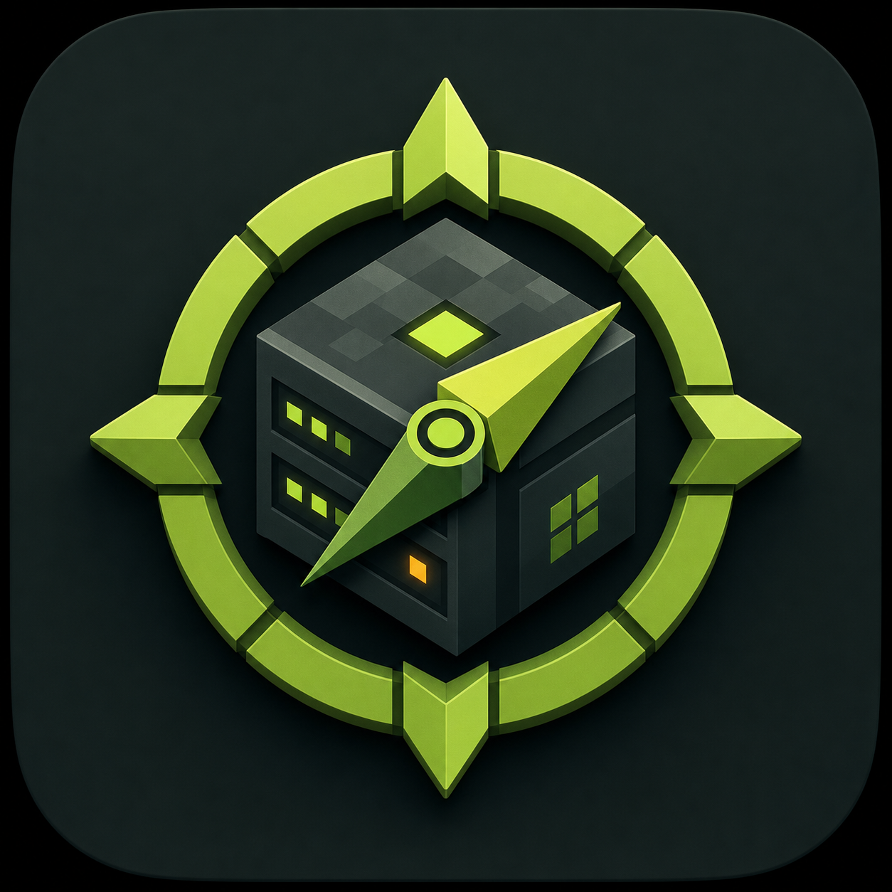

✦
Server in pochi click
Scegli versione e software, scarica il server e avvialo con un flusso guidato.

CraftPilot Scarica gratisMinecraft server manager open source
CraftPilot trasforma il self-hosting in un cockpit chiaro: crea l’istanza, installa la versione che vuoi, apri un indirizzo pubblico e gestisci tutto senza passare ogni volta dal terminale.
macOS Apple Silicon e Windows x64 · licenza MIT · creato da @sonoFrangu
Tutto in un unico posto
Scegli versione e software, scarica il server e avvialo con un flusso guidato.
Installa e avvia playit.gg dall’app: gli amici entrano da ogni parte del mondo.
Skin, vita, fame, inventario, permessi e comandi sono raccolti nella stessa vista.
Scrivi la descrizione con colori, grassetto e corsivo e guarda subito l’anteprima Minecraft.
Esplora cartelle, apri il server nel Finder o in Esplora file e gestisci i plugin con ordine.
Crea, riapri, archivia o elimina un server con doppia conferma e recupero sicuro.
Versione 0.5.0
Scarica il pacchetto per il tuo computer e inizia a costruire.